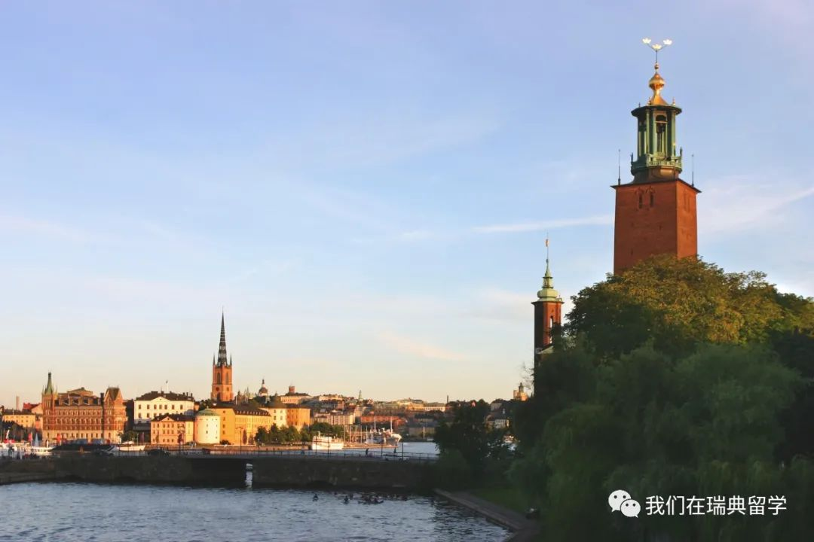
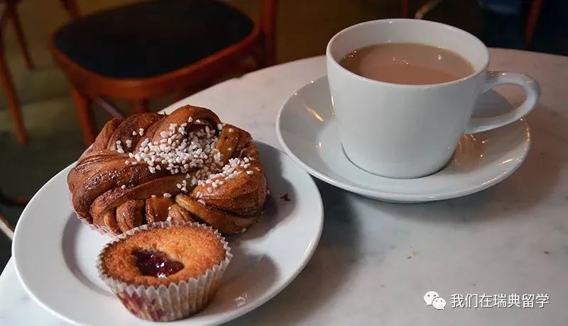

北欧留学30天初体验：给绝望的人希望，给希望的人幸福
如果说在照片调色风格中，美国大都会风是黑金、赛博朋克的炫酷，日本风是小清新般的宁静，国风是梅兰竹菊的典雅；
那么北欧风就是午后Fika的惬意。
在北欧的生活让我感慨生活的仪式感，虽说每天大部分时间都忙于课程，但每一天都非常充实。
就像Fika的咖啡，虽然略带苦涩，但却醇香四溢。
北欧初体验
不知不觉自己已经在北欧生活一个多月，虽说已由最初的兴奋转变为现在的习以为常。过着宿舍，Kista校区，图书馆三点一线的生活，但从未感觉感觉这里缺乏温度。
THS International Reception组织过各种有意思的活动；
Buddy Meeting认识了来自全世界各地的同学；
和Pre-sessional English Course的大家也从最开始的陌生人到现在来KTH后最亲密的朋友；
每晚从图书馆回宿舍后煮一顿浪漫法餐的幸福感；
看到自己Assignment拿到满分时候的满足感。
一切的一切都让我感受到了生活的充实感。
情绪起伏期
如果要问我在这里有没有难受的时刻，那答案肯定是有的。 因为一些个人原因，自己曾经低迷过一段时间，真的是很低迷的那种。 那天，我在这认识的最好的一个同学说图书馆关门后出去走走吧，然后我们就来到了KTH的M楼，这里有一架钢琴，他弹下了《卡农》。那晚，自己不争气地哭了，很久很久没有因为音乐而流泪，很多事情也涌上心头。 这首歌给了当初在情绪低谷的我以希望。
那段时间斯德哥尔摩下了很长时间的雨，等我第二天决定自己要重新站起来渡过难关的时候，斯德哥尔摩的天空也在历经长时间阴天之后，竟然放晴了。 真的非常感谢来这之后帮助过我的所有同学。
大家的心境可能像北欧的天空一样吧，清澈而透明。
北欧真的很神奇，往常平静地就像《卡农》的前奏，但是在你绝望的时候，会以副歌部分给予你继续往前走的勇气。 又会在你希望的时候给你递上一杯暖暖的咖啡，让你觉得幸福。 
关于课堂氛围
因为开学前给自己定了一些高目标，所以在这里的学习生活会显得有些压力。 但北欧学术环境还是非常自由的，在这上课最大的感受就是自由与尊重。自由体现在与其说是老师教，学生学，不如说老师和学生一起讨论一起学习。 上课可以随手举手提问，而且不用担心自己的问题是否值得问。
我们有一节Advanced Internetworking，后半节课上着上着基本上变成了老师和同学们一起讨论某一个问题。 而且不论你是在课上，还是在课下，无论这个问题是否有意义，老师都非常乐意回答学生的问题。
同时老师也会鼓励学生去广泛交流，不要局限于课堂。
我印象最深的是有一次参加mentor space，负责老师的研究方向是可穿戴智能设备，他说他每周都会去H&M找人聊天，从经理，设计师，到店员，顾客。 他说如果不直接和这些设计者或者使用者交流的话，他就无法设计出令人满意的可穿戴智能设备。 他说身为工程师，不应该仅仅满足于本专业所学知识，而是应该尽自己所能去了解这个世界，尽可能地通过不同的渠道掌握更多的知识。
北欧的夏天像午后的Fika，入秋后更像一首在地铁站中演奏的《卡农》，给绝望的人希望，给希望的人温暖。
屏幕前的陌生人，最近北欧降温了，多添些衣服，别让关心你的人担心。
祝你在北欧过得愉快。